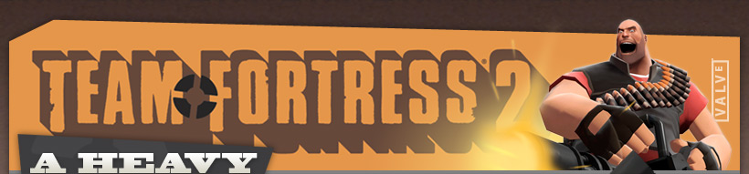
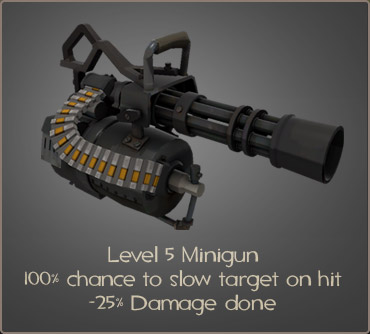

The Heavy's second unlockable, Natascha, slows enemies with her bullets. Anyone damaged by her will move slower for an instant, encouraging them to find cover or turn and face the Heavy, mano-a-tiny-itty-bitty-mano. Unfortunately, Natascha is slightly weaker than Sasha, so she takes longer to finish off a victim. As a result, Natascha's great against fleeing cowards, such as Scouts & Medics, and less great against anyone actively trying to kill her master. Heavies that like to jump around corners and surprise groups of startled enemy crybabies will also find her very useful, although they should look for a Sasha-wielding enemy Heavy before they leap.
© 2008 Valve Corporation, all rights reserved. Valve, the Valve logo, Half-Life, the Half-Life logo, the Lambda logo, Steam, the Steam logo,
Team Fortress, the Team Fortress logo, Opposing Force, Day of Defeat, the Day of Defeat logo, Counter-Strike, the Counter-Strike logo,
Source, the Source logo, Valve Source and Counter-Strike: Condition Zero are trademarks and/or registered trademarks of Valve Corporation.
Team Fortress, the Team Fortress logo, Opposing Force, Day of Defeat, the Day of Defeat logo, Counter-Strike, the Counter-Strike logo,
Source, the Source logo, Valve Source and Counter-Strike: Condition Zero are trademarks and/or registered trademarks of Valve Corporation.